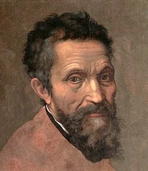
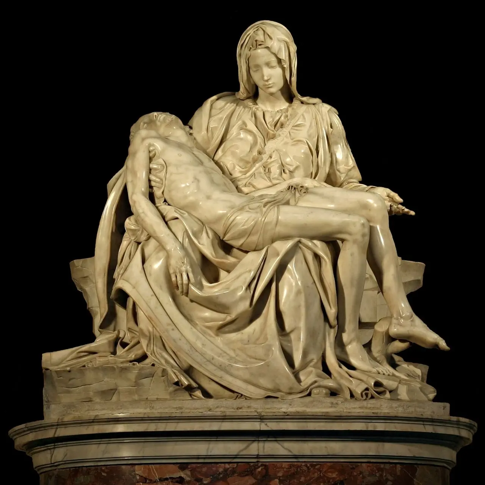
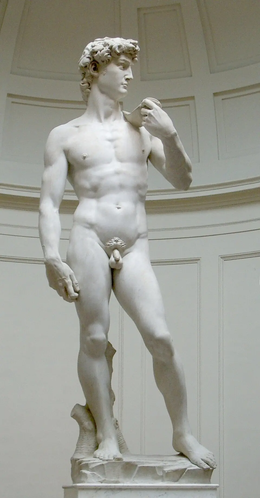
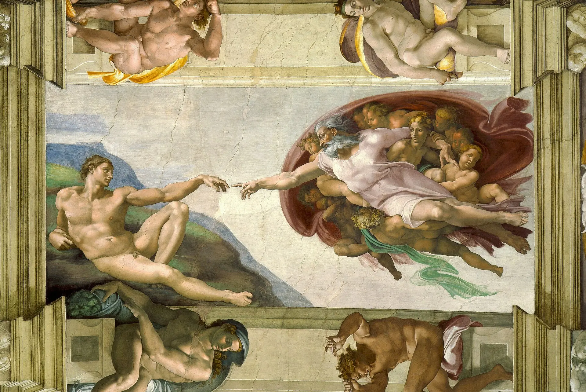
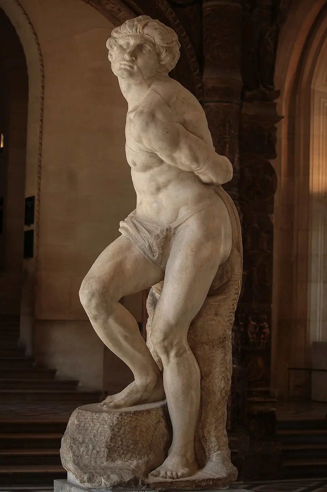
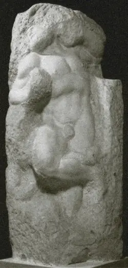

🖼 米开朗琪罗
🖼 哀悼基督
🖼 大卫像
🖼 创世记 · 创造亚当
🖼 垂死的奴隶
🖼 苏醒的奴隶米开朗琪罗跨越雕塑、绘画、建筑、诗歌四大领域。不论什么媒介，他都在做同一件事：从物质中释放灵魂。以下是覆盖他一生的六件代表作——从23岁到89岁。
《哀悼基督》1499
La Pietà
23岁。23岁的年轻人雕出了圣母最极致的哀伤——不是哭喊，是沉默的承受。圣彼得大教堂。
《大卫》1504
Il David
26岁。从废弃四十年的石料中解放。右手青筋暴起——不是力量，是战斗前的紧张。佛罗伦萨美术学院。
《创世记》1512
La Creazione
37岁。西斯廷穹顶。500㎡、300个人物、四年孤独。上帝手指与亚当手指之间那1毫米的间隙——整个文艺复兴的宣言。梵蒂冈。
《垂死的奴隶》1513-16
Schiavo morente
38岁。头和手向后垂——像在平静的沉睡中离开。手抚胸膛，嘴角微启。不是痛苦，是解脱。卢浮宫。
《苏醒的奴隶》1513-16
Schiavo ribelle
同一时期。身体扭动，肌肉膨胀——不是醒来，是挣扎。下半身永远埋在石头里。非弗尼托哲学的完美体现。卢浮宫。
米开朗琪罗肖像 16世纪
Ritratto di Michelangelo
断裂的鼻子、深邃的双眼、倔强的下颚。他从不掩饰脸上的伤疤——那是他年轻时在圣灵教堂与学徒斗殴留下的印记，也是他一生好斗的物证。
「最高贵的艺术不是完成——是快要完成。」
L'arte più nobile non è compiuta — è sul punto di esserlo.
— Michelangelo
《被缚的奴隶》和《苏醒的奴隶》（卢浮宫）——身体从大理石中挣扎而出，但下半身仍困在石头里。米开朗琪罗故意不完成它们。人在物质中挣扎、但永远无法彻底挣脱——这就是非弗尼托（non-finito）哲学。
「我在大理石中看见了天使，于是不停地雕刻，直到把他解放出来。」
Vedo l'angelo nel marmo e scolpisco finché non lo libero.
— Michelangelo
这些"未完成"的奴隶原本是为尤利乌斯二世陵墓制作的。它们证明了米开朗琪罗独特的创作方法：不是从外向内塑造，而是从内向外释放。那些留在石头里的身体，比完成的更动人。
米开朗琪罗留下了超过300首十四行诗——文艺复兴三杰中，只有他被同时代的人称为"诗人"。他的诗和他的雕塑用的是同一把凿子：都在问同一个问题——灵魂如何挣脱肉体？
「雕刻的双手能赋予石头生命，
但只有爱才能让灵魂苏醒。」
Le man che scolpisano danno vita alla pietra,
ma solo l'amore risveglia l'anima.
— Michelangelo, Sonetto per Vittoria Colonna
1526年，50岁的米开朗琪罗遇见维多利亚·科隆纳——一位侯爵夫人、诗人。他们的友谊持续了十年，直至她去世。他把这种柏拉图式的爱写进了最动人的十四行诗——一种灵魂对另一个灵魂的凝视，而非肉体的渴望。